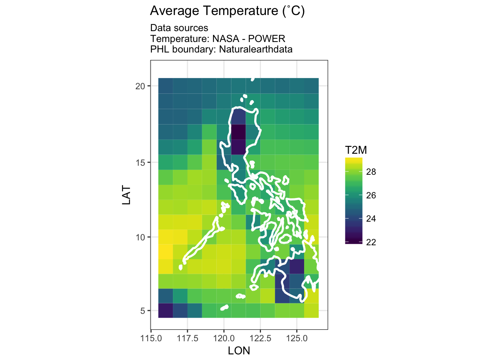

nasapower
Adam H Sparks
Introduction
nasapower aims to make it quick, easy and efficient to automate downloading NASA-POWER agroclimatology data in your R session as a tidy data frame.
nasapower only provides functions, get_cell(), for a given 1˚ longitude by 1˚ latitude cell and get_region(), both of which will download specified variables and return a tidy data frame of the requested data. Weather variables can be specified by using the vars argument.
Using get_cell()
The get_cell() function accepts four arguments.
get_cell(lonlat = NULL, vars = c("T2M", "T2MN", "T2MX", "RH2M"),
stdate = "1983-1-1", endate = Sys.Date())lonlatA length-2 numeric vector giving the decimal degree longitude and and latitude in that order for cell data to download-
varsWeather variables to query for download, defaults to all available. Validvarsinclude:toa_dwn - Average top-of-atmosphere insolation (MJ/m^2/day)
swv_dwn - Average insolation incident on a horizontal surface (MJ/m^2/day)
lwv_dwn - Average downward longwave radiative flux (MJ/m^2/day)
T2M - Average air temperature at 2m above the surface of the Earth (degrees C)
T2MN - Minimum air temperature at 2m above the surface of the Earth (degrees C)
T2MX - Maximum air temperature at 2m above the surface of the Earth (degrees C)
RH2M - Relative humidity at 2m above the surface of the Earth (%)
DFP2M - Dew/Frost point temperature at 2m above the surface of the Earth (degrees C)
RAIN - Average precipitation (mm/day)
WS10M - Wind speed at 10m above the surface of the Earth (m/s)
stdateStarting date for download, defaults to 01/01/1983 (there is no earlier data)endateEnd date for download, defaults to current date
Basic example of using get_cell()
Fetch all variables available for 1983-1-1 to current date for the cell at longitude -179.5 and latitude -89.5.
Specifying dates
By default get_cell() will use 1983-01-01 as a start date and the current date as the end date. Following is an example of specifying the end date.
Specify only the end date, 1983-01-02, using the default start date of 1983-01-01.
Specifying variables
By default get_cell() will fetch all weather variables available if none are specified. Following is an example of specifying only one variable, WS10M, for retrieval.
Using get_region()
The get_region() function accepts the same arguments as get_cell(), however, the lonlat value is a length-4 numeric vector of the minimum longitude, maximum longitude, minimum latitude and maximum latitude.
This function is useful for retrieving whole states, countries or global surfaces. Retrieving a whole global surface for a single day and all available variables can take roughly two hours depending on the Internet connection speed. The resulting data frame for 365 days is roughly 2 GB depending on the completeness of the data set available for the requested year.
The following example illustrates fetching and graphing the average temperature and relative humidity for the Philippines for the first two days of 2017.
# get a sp data frame for the Philippines from naturalearthdata
PHL_adm <- rnaturalearth::ne_countries(scale = 50,
country = "Philippines",
returnclass = "sp")
# get the bounding box from the sp object to instruct the `lonlat` values
PHL_lonlat <- sp::bbox(PHL_adm)
PHL <- get_region(lonlat = c(PHL_lonlat[1, 1],
PHL_lonlat[1, 2],
PHL_lonlat[2, 1],
PHL_lonlat[2, 2]),
vars = c("T2M", "RH2M"),
stdate = "2017-1-1",
endate = "2017-1-2")Using ggplot2, plot the downloaded data with an outline from Naturalearthdata for reference.
library(ggplot2)
library(viridis)
# Plot temperature
ggplot(PHL) +
geom_tile(aes(x = LON, y = LAT, fill = T2M)) +
scale_fill_viridis() +
geom_polygon(data = PHL_adm, aes(x = long, y = lat, group = group),
fill = NA, color = "white", size = 1) +
theme_bw() +
coord_map() +
facet_grid(. ~ YYYYMMDD) +
ggtitle("Average Temperature (˚C)",
subtitle = "Data sources\nTemperature: NASA - POWER\nPHL boundary: Naturalearthdata")
# Plot RH
ggplot(PHL, aes(x = LON, y = LAT, fill = RH2M)) +
geom_tile() +
scale_fill_viridis(option = "C") +
geom_polygon(data = PHL_adm, aes(x = long, y = lat, group = group),
fill = NA, color = "white", size = 1) +
theme_bw() +
coord_map() +
facet_grid(. ~ YYYYMMDD) +
ggtitle("Average Relative Humidity (%)",
subtitle = "Data sources\nRelative Humidity: NASA - POWER\nPHL boundary: Naturalearthdata")
Creating Spatial Objects
If you require spatial objects to work with, it is rather simple to convert the resulting tidy data frame from either get_cell() or get_region() to a spatial object in R using raster::rasterFromXYZ().
Converting to a raster Object
Using the PHL object from the previous example, convert the data frame to a raster brick. The LON and LAT values are in columns 6 and 7 with the weather vars in any following columns.
The first step is to base::split() the data frame into a list of data frames by day.
Then convert the base::list() into a list of raster::brick() objects.
library(raster)
# Use split to create a list of data frames split by YYYYMMDD
PHL <- split(PHL, PHL$YYYYMMDD)
# Remove date information from data frame, list names will carry YYYYMMDD
PHL <-
lapply(PHL, function(x)
x[(!names(x) %in% c("YEAR", "MONTH", "DAY", "YYYYMMDD", "DOY"))])
# Create a list of raster bricks from each YYYYMMDD data frame
PHL <- lapply(PHL, rasterFromXYZ,
crs = "+proj=eqc +lat_ts=0 +lat_0=0 +lon_0=0 +x_0=0 +y_0=0 +ellps=WGS84 +datum=WGS84 +units=m +no_defs ")